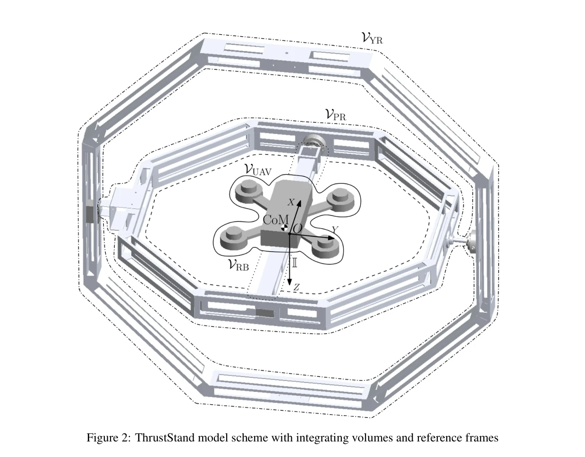
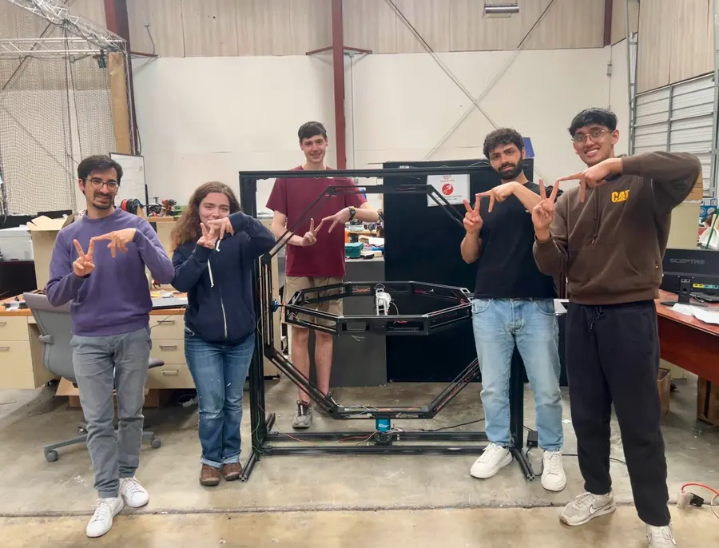

Problem
Tuning UAV controllers in free flight is slow and risky. The stand holds a drone at the intersection of three nested rings, so roll, pitch, and yaw stay measurable and constrained while controllers run against real actuators and real inertia.
What I Built
- Torque-tested the Dynamixel MX-106T on a custom test stand against its datasheet and computed inertia matrices from SolidWorks models to root-cause yaw-axis motor stalls.
- Helped drive the FEA-guided redesign that cut stand mass 28.7% (19.67 to 14.02 kg) and dropped the yaw torque requirement from 10.59 to 7.13 N·m, bringing it inside the motor's capability.
- Rewired, reassembled, and documented the rebuilt stand.
- Integrated a Pixhawk 6C with an Odroid M1S running ROS 2 Galactic and the ACSL flight stack; wrote C++ ROS 2 nodes for Dynamixel-actuated moment cancellation from rigid-body inertia and moment models.
- Implemented IMU signal processing with high-pass filtering to derive acceleration from published position/velocity topics, validated against logged data.
- Implemented the MATLAB genetic-algorithm workflow for inner-loop PID tuning and performance-index evaluation.

Engineering Detail
The software stack connected PX4 vehicle odometry, Dynamixel MX-series commands, filtered body-rate derivatives, and inertia matrices for the UAV and thrust-stand rings. Control torques came from rigid-body terms of the form Iα + ω × Iω, checked against the motors' torque limits. Axis characterization used sinusoidal and step-input tests driven by C++ scripts on the Dynamixel SDK, with MATLAB post-processing of the logged responses.
The math behind the moment cancellation comes from the lab's full dynamic model of the stand, derived by ACSL's Luca Nanu and Giorgio A. Orlando with Dr. L'Afflitto. It treats the roll bar, inner ring, outer ring, and mounted UAV as separate volumes with their own reference frames, and derives the control input that cancels the structure's inertial torques, so the quadcopter on the stand can be controlled almost as if it were in free flight.

Before trusting hardware tests, the team worked from CAD-derived body properties to reason about body frames, inertia, center-of-mass placement, and actuation constraints.

Outcome
The project produced a working, lighter testbed and a setup manual covering wiring, the ROS 2 build/run workflow, data logging, and troubleshooting for later lab teams. I presented the research at the AirTalent Symposium at NAVAIR Patuxent River, Maryland.